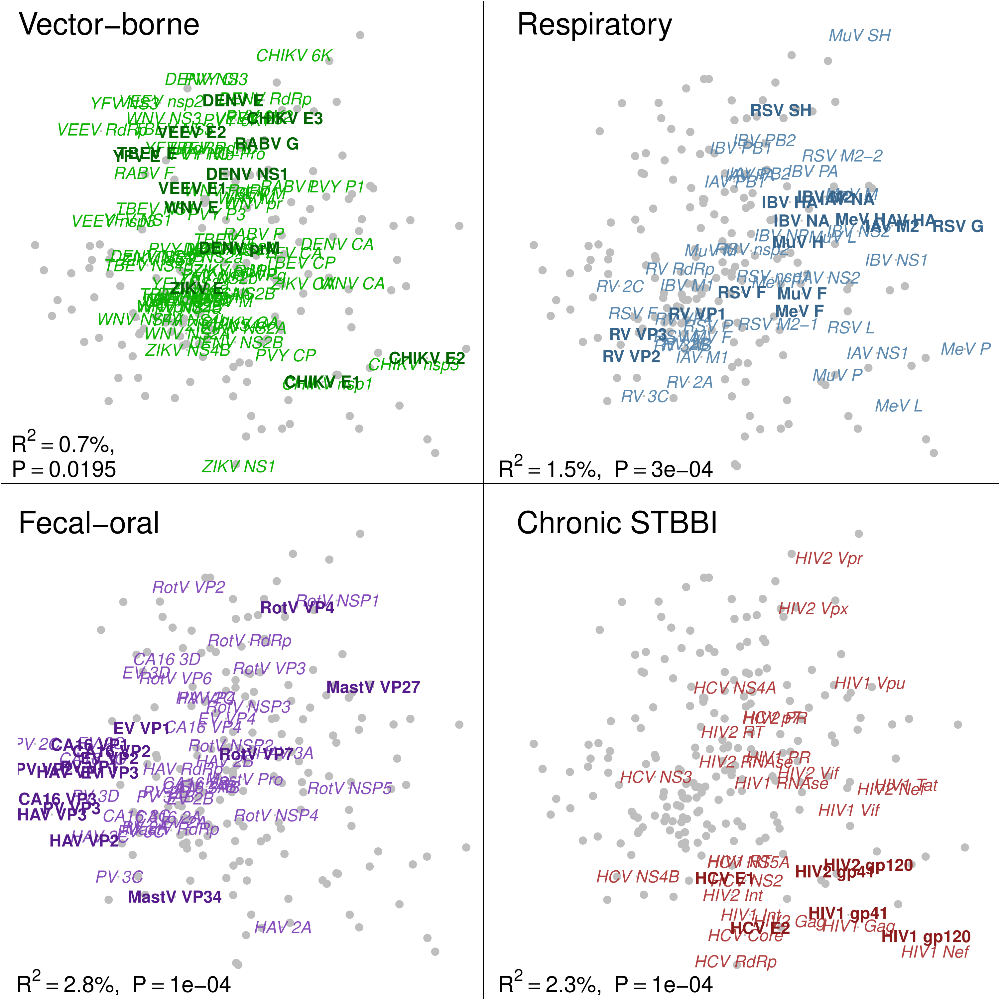

Laura Muñoz Baena
Bioinformatics · Virus Evolution · Phylodynamics
I study how interactions between viruses and their hosts have shaped the evolution of life. My research combines bioinformatics, phylogenetics, mathematical modelling, and open-source software development to investigate these evolutionary processes.